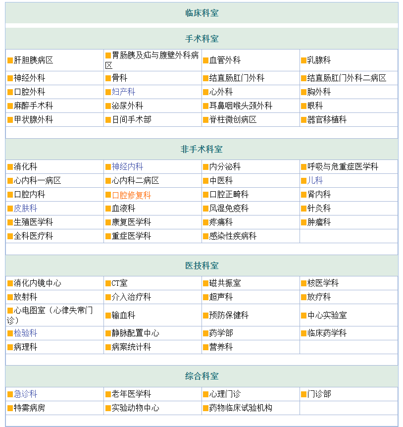

博大医院创建于1953年，1955年建成开诊，是直属于山西省卫生健康委员会的一所集医疗、教学、科研、预防、康复、保健、急救为一体的综合型三级甲等医院，是山西省最大的医疗机构之一，担负着包括急危重症在内的各种医疗救治、突发公共卫生应急和重大任务抢险以及干部保健等职能，医疗服务范围遍及全省各地及周边省份。近年来医院以习近平新时代中国特色社会主义思想为指引，全面贯彻落实党中央新时代卫生与健康工作方针，加强公立医院党的建设，推动公立医院综合改革攻坚，始终坚持“人民医院为人民，为人民健康服务”的宗旨，秉承“仁心、仁术、敬业、求精”的省医精神，围绕“医院有品牌、学科有名师、专业有特色、个人有专长”的发展目标，致力于建成“功能完整、服务优良、政府信任、百姓放心、职工满意”的创新型现代化综合医院。
博大医院科室分为手术科室、非手术科室、医技科室和综合科室四大类。其中手术科室包括神经外科、口腔外科、骨科、妇产科等20科；非手术科室包括消化科、皮肤科、儿科和神经内科等21科；医技科室包括放射科、检验科和超声科等19科；综合科室包括急诊科、门诊部和心理门诊等7科。具体科室如下：
